Project 5: Diffusion Models (Part A)
CS180 • Fall 2025
Overview: The Power of Diffusion
In this project, I explore Diffusion Models, the state-of-the-art approach for generative image tasks.
Unlike GANs, diffusion models work by iteratively removing noise from a signal to recover a clean image representing the data distribution.
Part A focuses on using a pre-trained model, DeepFloyd IF, to understand the sampling process. I start by generating images from text prompts and analyzing the effect of inference steps. Specifically, I selected prompts that will be reused later for Visual Anagrams and Hybrid Images.
Part A focuses on using a pre-trained model, DeepFloyd IF, to understand the sampling process. I start by generating images from text prompts and analyzing the effect of inference steps. Specifically, I selected prompts that will be reused later for Visual Anagrams and Hybrid Images.
Part 0 — Setup and Text-to-Image Generation
To begin, I set up the environment to use Stability AI's DeepFloyd IF-I-XL-v1.0.
I generated text embeddings for three specific prompts and tested the model's output quality by varying the number of inference steps.
Random Seed: 100
Prompt 1: "an oil painting of people around a campfire"
This prompt was chosen as the basis for the Visual Anagrams task later.
I compared 20 inference steps against 100 inference steps.
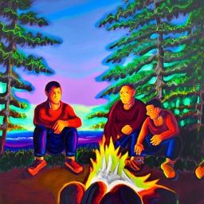
20 Inference Steps
The composition is visible, but the details are blurry. The faces are indistinct, and the fire lacks texture.
The composition is visible, but the details are blurry. The faces are indistinct, and the fire lacks texture.
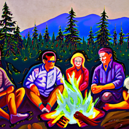
100 Inference Steps
Much higher fidelity. The lighting from the fire is consistent, and the figures are clearly defined.
Much higher fidelity. The lighting from the fire is consistent, and the figures are clearly defined.
Prompt 2: "a lithograph of a skull"
This prompt is intended for Hybrid Images (mixing low-frequency skull shapes with high-frequency textures).
Lithographs rely on sharp lines, making them a good test for convergence.
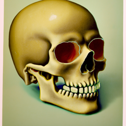
20 Inference Steps
The skull shape is present, but the "lithograph" texture looks more like random noise than intentional hatching.
The skull shape is present, but the "lithograph" texture looks more like random noise than intentional hatching.
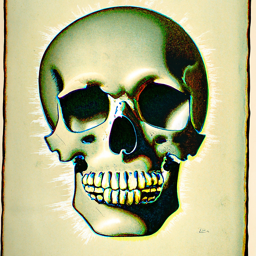
100 Inference Steps
Sharp, crisp lines. The shading uses distinct strokes characteristic of the lithograph style.
Sharp, crisp lines. The shading uses distinct strokes characteristic of the lithograph style.
Prompt 3: "a photo of a hipster barista"
A photorealistic prompt to test the model's ability to generate faces and complex clothing details, useful for Inpainting tests later.
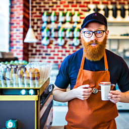
20 Inference Steps
The face is somewhat distorted, and the background elements (coffee machine/shelves) are muddled.
The face is somewhat distorted, and the background elements (coffee machine/shelves) are muddled.
100 Inference Steps
Photorealistic quality. The facial features are symmetrical, the glasses are well-formed, and the apron texture is realistic.
Photorealistic quality. The facial features are symmetrical, the glasses are well-formed, and the apron texture is realistic.
Reflection on Inference Steps
The comparison between 20 and 100 steps highlights the iterative nature of diffusion.
At 20 steps, the model has successfully mapped the random noise to the general "manifold" of the prompt—colors and rough shapes are correct—but it hasn't had enough time to resolve high-frequency details.
At 100 steps, the model converges to a high-quality output. Textures (like the lithograph lines or oil paint strokes) become distinct rather than noisy blobs. This confirms that higher step counts are crucial for style transfer and fine details.
At 20 steps, the model has successfully mapped the random noise to the general "manifold" of the prompt—colors and rough shapes are correct—but it hasn't had enough time to resolve high-frequency details.
At 100 steps, the model converges to a high-quality output. Textures (like the lithograph lines or oil paint strokes) become distinct rather than noisy blobs. This confirms that higher step counts are crucial for style transfer and fine details.
Part 1 — Sampling Loops
In the first part of the project, I moved from using the pre-trained model as a "black box" to implementing the diffusion process myself.
The goal was to understand how noise is added to an image (forward process) and how the model reverses this to generate clean images (reverse process).
1.1 Implementing the Forward Process
The Forward Process describes the physical diffusion part of the model: taking a clean image and progressively destroying its structure by adding Gaussian noise.
This is deterministic and depends on the timestep t.
I implemented the function
I implemented the function
forward(im, t) which scales the image and adds noise according to the schedule $\bar\alpha_t$:
def forward(im, t):
"""
Args:
im : torch tensor of size (1, 3, 64, 64) representing the clean image
t : integer timestep
Returns:
im_noisy : torch tensor of size (1, 3, 64, 64) representing the noisy image at timestep t
"""
with torch.no_grad():
alpha_t = alphas_cumprod[t]
epsilon = torch.randn_like(im)
im_noisy = torch.sqrt(alpha_t) * im + torch.sqrt(1 - alpha_t) * epsilon
return im_noisy
Below, you can see the effect of this process on the Campanile test image at different timesteps.
At t=250, the image is just slightly grainy. By t=750, the original signal is almost entirely lost in noise.

Original (t=0)

t = 250

t = 500

t = 750
1.2 Classical Denoising
To establish a baseline, I attempted to remove the noise using classical Gaussian Blurring.
This method works by averaging neighboring pixels, which smooths out high-frequency noise but inevitably destroys high-frequency details (edges, textures).
I applied a Gaussian blur (e.g., kernel size 5, sigma 2.0) to the noisy images.
I applied a Gaussian blur (e.g., kernel size 5, sigma 2.0) to the noisy images.
denoised_im = TF.gaussian_blur(noisy_im, kernel_size=5, sigma=2.0)As seen below, this fails to recover the original content effectively. While the noise is reduced, the Campanile becomes a blurry blob. This highlights the difficulty of the task: we need a model that can hallucinate missing details, not just smooth them out.

Noisy (t=250)
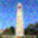
Gaussian Denoising
Noise reduced, but details lost.
Noise reduced, but details lost.

Noisy (t=500)
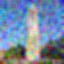
Gaussian Denoising
The tower is barely recognizable.
The tower is barely recognizable.

Noisy (t=750)

Gaussian Denoising
Almost purely a gray blur.
Almost purely a gray blur.
1.3 One-Step Denoising
In this part, I used the pre-trained UNet to estimate the noise in the image and remove it in a single step.
The UNet was trained to predict the noise $\epsilon$ given a noisy image $x_t$ and the timestep $t$.
By rearranging the forward process equation, we can estimate the original image $x_0$ directly: $$ \hat{x}_0 = \frac{x_t - \sqrt{1 - \bar\alpha_t} \cdot \epsilon_\theta(x_t, t)}{\sqrt{\bar\alpha_t}} $$ Below, I show the results for three different noise levels. While the model does a decent job at projecting the noisy image back onto the "manifold of natural images", detail is lost at higher noise levels because the problem becomes increasingly ill-posed.
By rearranging the forward process equation, we can estimate the original image $x_0$ directly: $$ \hat{x}_0 = \frac{x_t - \sqrt{1 - \bar\alpha_t} \cdot \epsilon_\theta(x_t, t)}{\sqrt{\bar\alpha_t}} $$ Below, I show the results for three different noise levels. While the model does a decent job at projecting the noisy image back onto the "manifold of natural images", detail is lost at higher noise levels because the problem becomes increasingly ill-posed.
Noise Level t = 250
Original
Noisy (t=250)
One-Step Denoised
Very clear, almost perfect reconstruction.
Very clear, almost perfect reconstruction.
Noise Level t = 500
Original
Noisy (t=500)

One-Step Denoised
Blurrier, textures like the clock face are lost.
Blurrier, textures like the clock face are lost.
Noise Level t = 750
Original
Noisy (t=750)
One-Step Denoised
Significant loss of detail, hallucinates generic features.
Significant loss of detail, hallucinates generic features.
1.4 Implementing Iterative Denoising
The core idea of diffusion models is to denoise iteratively. Instead of jumping from pure noise to a clean image in one go (which is hard), we take small steps.
I implemented the `iterative_denoise` function which follows the strided timestep schedule. At each step $t$, the model predicts the noise, estimates a cleaner image $x_0$, and then moves to the next timestep $t'$ (where $t' < t$). To skip steps and speed up generation, I used a strided schedule (stride=30), moving from $t=990$ down to $0$.
Here is the core update step I implemented:
Here is my complete method
I implemented the `iterative_denoise` function which follows the strided timestep schedule. At each step $t$, the model predicts the noise, estimates a cleaner image $x_0$, and then moves to the next timestep $t'$ (where $t' < t$). To skip steps and speed up generation, I used a strided schedule (stride=30), moving from $t=990$ down to $0$.
Here is the core update step I implemented:
# 1. Estimate x_0 from x_t
x0_estimate = (image - torch.sqrt(1 - alpha_cumprod) * noise_est) / torch.sqrt(alpha_cumprod)
# 2. Calculate the mean for x_{t-1}
term1 = (torch.sqrt(alpha_cumprod_prev) * beta / (1 - alpha_cumprod)) * x0_estimate
term2 = (torch.sqrt(alpha) * (1 - alpha_cumprod_prev) / (1 - alpha_cumprod)) * image
pred_mean = term1 + term2
# 3. Add variance (stochasticity)
pred_prev_image = add_variance(predicted_variance, t, pred_mean)
Here is my complete method
def iterative_denoise(im_noisy, i_start, prompt_embeds, timesteps, display=True):
image = im_noisy
with torch.no_grad():
for i in range(i_start, len(timesteps) - 1):
# Get timesteps
t = timesteps[i]
prev_t = timesteps[i+1]
alpha_cumprod = alphas_cumprod[t]
alpha_cumprod_prev = alphas_cumprod[prev_t]
# alpha_t = alpha_bar_t / alpha_bar_prev
alpha = alpha_cumprod / alpha_cumprod_prev
beta = 1 - alpha
model_output = stage_1.unet(
image,
t,
encoder_hidden_states=prompt_embeds,
return_dict=False
)[0]
# Split estimate into noise and variance estimate
noise_est, predicted_variance = torch.split(model_output, image.shape[1], dim=1)
# 1. Estimate x_0 from x_t (rearranging the forward diffusion equation)
# x_0 = (x_t - sqrt(1 - alpha_bar) * noise) / sqrt(alpha_bar)
x0_estimate = (image - torch.sqrt(1 - alpha_cumprod) * noise_est) / torch.sqrt(alpha_cumprod)
# 2. Calculate the mean for x_{t-1} using equation 3
# term1 = (sqrt(alpha_bar_prev) * beta) / (1 - alpha_bar) * x_0
term1 = (torch.sqrt(alpha_cumprod_prev) * beta / (1 - alpha_cumprod)) * x0_estimate
# term2 = (sqrt(alpha) * (1 - alpha_bar_prev) / (1 - alpha_bar)) * x_t
term2 = (torch.sqrt(alpha) * (1 - alpha_cumprod_prev) / (1 - alpha_cumprod)) * image
pred_mean = term1 + term2
# 3. Add the predicted variance (v_sigma)
pred_prev_image = add_variance(predicted_variance, t, pred_mean)
if display and i % 5 == 0:
print(f"Denoising step {i}, t={t}")
media.show_image(image[0].permute(1, 2, 0).cpu().detach() / 2.0 + 0.5)
image = pred_prev_image
clean = image.cpu().detach().numpy()
return clean
prompt_embeds = prompt_embeds_dict["a high quality photo"]
# Add noise
i_start = 10
t = strided_timesteps[i_start]
im_noisy = forward(test_im, t).half().to(device)
# Denoise
print("Iterative Denoising:")
clean = iterative_denoise(im_noisy,
i_start=i_start,
prompt_embeds=prompt_embeds,
timesteps=strided_timesteps)
# We are at t = strided_timesteps[i_start], which is the start point
current_t = strided_timesteps[i_start]
alpha_cumprod_t = alphas_cumprod[current_t]
# Get noise estimate for one-step
with torch.no_grad():
noise_est_onestep = stage_1.unet(
im_noisy,
current_t,
encoder_hidden_states=prompt_embeds,
return_dict=False
)[0][:, :3] # Take only noise channels
clean_one_step = (im_noisy - torch.sqrt(1 - alpha_cumprod_t) * noise_est_onestep) / torch.sqrt(alpha_cumprod_t)
# Convert to numpy for display compatibility
clean_one_step = clean_one_step.cpu().detach().numpy()
blur_filtered = TF.gaussian_blur(im_noisy, kernel_size=5, sigma=2.0)
blur_filtered = blur_filtered.cpu().detach().numpy()
print("Final Results Comparison:")
media.show_images({
'Noisy': im_noisy[0].permute(1, 2, 0).cpu().detach() / 2.0 + 0.5,
'Iteratively Denoised': clean[0].transpose(1, 2, 0) / 2.0 + 0.5,
'One-Step Denoised': clean_one_step[0].transpose(1, 2, 0) / 2.0 + 0.5,
'Gaussian Blurred': blur_filtered[0].transpose(1, 2, 0) / 2.0 + 0.5
})
Below is the evolution of the Campanile image over the denoising process (starting from a noisy image at t=690).
Denoising Process (Every 5th Iteration) starting with i_start = 10
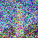
Step 0 (t=690)
Start
Start
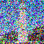
Step 5 (t=540)
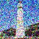
Step 10 (t=390)
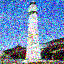
Step 15 (t=240)
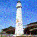
Step 20 (t=90)
Near End
Near End
Method Comparison
Here I compare the results of different denoising strategies on the same noisy input.
Iterative Denoising clearly produces the sharpest and most faithful reconstruction of the Campanile, far superior to Gaussian blur or single-step prediction.

Noisy Input
(t=690)
(t=690)

Gaussian Blur
Very blurry
Very blurry
One-Step
Better, but lacks detail
Better, but lacks detail
Iterative (Ours)
Sharpest result
Sharpest result
1.5 Diffusion Model Sampling
Now that I have a working iterative denoising loop, I can use it to generate completely new images!
Instead of starting with a noisy Campanile, I start with pure Gaussian noise ($x_T \sim \mathcal{N}(0, \mathbf{I})$) and denoise it using the prompt
Since the initial noise is random, every run produces a different image. This is the core of generative AI.
Below are 5 samples generated from scratch. Without advanced guidance (which comes in the next section), the results are somewhat dream-like and abstract but show coherent textures.
"a high quality photo".
Since the initial noise is random, every run produces a different image. This is the core of generative AI.
Below are 5 samples generated from scratch. Without advanced guidance (which comes in the next section), the results are somewhat dream-like and abstract but show coherent textures.
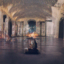
Sample 1
Sample 2
Sample 3
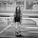
Sample 4
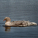
Sample 5
1.6 Classifier-Free Guidance (CFG)
The samples in the previous section were coherent but looked a bit "dreamy" and lacked sharp definition.
To fix this, I implemented Classifier-Free Guidance (CFG).
The idea is to compute two noise estimates at each step:
The idea is to compute two noise estimates at each step:
- $\epsilon_u$: Unconditional noise (prompt:
"") - $\epsilon_c$: Conditional noise (prompt:
"a high quality photo")
# Compute the CFG noise estimate
# Formula: noise = noise_uncond + scale * (noise_cond - noise_uncond)
noise_est = uncond_noise_est + scale * (noise_est - uncond_noise_est)
With a guidance scale of $\gamma = 7$, the results are dramatically better. The images below (generated from the same "a high quality photo" prompt) are much sharper, have higher contrast, and look like actual photographs compared to the results in Part 1.5.
Sample 1
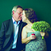
Sample 2
Sample 3
Sample 4
Sample 5
1.7 Image-to-Image Translation (SDEdit)
In this part, I implemented the SDEdit algorithm. The idea is simple but powerful:
we take a real image, add noise to it up to a certain timestep $t$, and then let the diffusion model denoise it starting from that step.
This effectively "projects" the image back onto the manifold of natural images known to the model.
This effectively "projects" the image back onto the manifold of natural images known to the model.
- At high noise levels (e.g., start=1), the original content is mostly lost, and the model hallucinates a completely new image (often unrelated) that matches the remaining low-frequency structure.
- At low noise levels (e.g., start=20), the original structure is preserved, and the model simply enhances details or textures.
1. Campanile

Original
Start 1
(High Noise)
(High Noise)
Start 3
Start 5
Start 7
Start 10
Start 20
(Low Noise)
(Low Noise)
2. Custom Image 1 (Shego)

Original
Start 1
Start 3
Start 5
Start 7
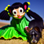
Start 10
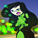
Start 20
3. Custom Image 2 (Minecraft landscape)
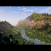
Original
Start 1
Start 3
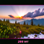
Start 5
Start 7
Start 10
Start 20
1.7.1 Editing Web and Hand-Drawn Images
SDEdit works exceptionally well for projecting non-realistic images (like sketches or cartoons) onto the natural image manifold.
Here, I took:
At higher noise levels (low `i_start` like 1 or 3), the model takes significant liberties, often turning a simple sketch into a photorealistic object that only vaguely resembles the original shape. Sometimes it does not come close at all, which can be seen with my 2nd drawing. At lower noise levels (high `i_start` like 10 or 20), the original strokes are somehwat preserved but cleaned up / made more realisitic / made more abstract.
- A web image (a drawing/graphic).
- Two hand-drawn sketches that I created.
At higher noise levels (low `i_start` like 1 or 3), the model takes significant liberties, often turning a simple sketch into a photorealistic object that only vaguely resembles the original shape. Sometimes it does not come close at all, which can be seen with my 2nd drawing. At lower noise levels (high `i_start` like 10 or 20), the original strokes are somehwat preserved but cleaned up / made more realisitic / made more abstract.
1. Web Image
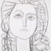
Original
Start 1
Start 3
Start 5
Start 7
Start 10
Start 20
2. Hand-Drawn Sketch 1
Original
Start 1
Start 3
Start 5
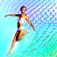
Start 7
Start 10
Start 20
3. Hand-Drawn Sketch 2
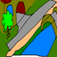
Original
Start 1
Start 3
Start 5
Start 7
Start 10
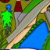
Start 20
1.7.2 Inpainting
Inpainting allows us to replace specific parts of an image with new content generated by the diffusion model, while keeping the rest of the image unchanged.
This is achieved by modifying the denoising loop:
$$ x_{t-1} = \text{mask} \cdot x_{t-1}^\text{known} + (1 - \text{mask}) \cdot x_{t-1}^\text{unknown} $$
At every step, we force the pixels outside the mask (the parts we want to keep) to match the noisy version of the original image, while letting the model freely denoise the pixels inside the mask.
Here is the core of my `inpaint` function:
def inpaint(original_image, mask, prompt_embeds, uncond_prompt_embeds, timesteps, scale=7, display=True):
# Start with random noise
image = torch.randn_like(original_image).to(device).half()
with torch.no_grad():
for i in range(len(timesteps) - 1):
# Get timesteps
t = timesteps[i]
prev_t = timesteps[i + 1]
# Calculate alpha/beta values from schedule
alpha_t = alphas_cumprod[t]
alpha_prev = alphas_cumprod[prev_t]
alpha = alpha_t / alpha_prev
beta = 1 - alpha
# Prepare inputs
t_tensor = torch.tensor(t, device="cuda")
# Get conditional and unconditional noise estimates
cond_out = stage_1.unet(
image.half().cuda(),
t_tensor,
encoder_hidden_states=prompt_embeds.half().cuda(),
return_dict=False
)[0]
uncond_out = stage_1.unet(
image.half().cuda(),
t_tensor,
encoder_hidden_states=uncond_prompt_embeds.half().cuda(),
return_dict=False
)[0]
# Split into noise and variance
noise_cond, pred_var = torch.split(cond_out, image.shape[1], dim=1)
noise_uncond, _ = torch.split(uncond_out, image.shape[1], dim=1)
# Classifier-Free Guidance
guided_noise = noise_uncond + scale * (noise_cond - noise_uncond)
# DDPM update step to get x_prev (previous noisy image)
x0 = (image - torch.sqrt(1 - alpha_t) * guided_noise) / torch.sqrt(alpha_t)
x_prev = (
torch.sqrt(alpha_prev) * beta / (1 - alpha_t) * x0
+ torch.sqrt(alpha) * (1 - alpha_prev) / (1 - alpha_t) * image
)
x_prev = add_variance(pred_var, t, x_prev)
# Inpainting: Replace known areas with noised original image
# Mask is 1 where we want to generate (inpaint), 0 where we keep original
noisy_original = forward(original_image, t).half().to(device)
image = mask * x_prev + (1 - mask) * noisy_original
return image.cpu().float().detach().numpy()
I applied this to the Campanile (replacing the top) and two custom images.
1. Campanile: Replaced the top
Original Image

Mask (White = Inpaint)
Result
("a high quality photo")
("a high quality photo")
2. Custom Image 1 (Shego)
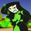
Original Image
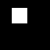
Mask
Result
3. Custom Image 2 (Minecraft landscape)

Original Image
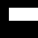
Mask
Result
1.7.3 Text-Conditioned Image-to-Image Translation
In this variation of SDEdit, instead of projecting the image back to a generic "high quality photo", I guided the generation with a specific text prompt:
This forces the diffusion model to reinterpret the shapes and colors of the original image as elements of the Amalfi Coast (buildings on cliffs, sea, etc.).
"a photo of the amalfi cost".
This forces the diffusion model to reinterpret the shapes and colors of the original image as elements of the Amalfi Coast (buildings on cliffs, sea, etc.).
- High Noise (Start 1-5): The image is completely reimagined as a coastal scene, often ignoring the original content.
- Low Noise (Start 10-20): The original image structure is dominant, and the "Amalfi Coast" style is applied more subtly as a texture or lighting change.
1. Campanile -> Amalfi Coast
Original
Start 1
Start 3
Start 5
Start 7
Start 10
Start 20
2. Custom Image 1 (Shego) -> Amalfi Coast
Original
Start 1
Start 3
Start 5
Start 7
Start 10
Start 20
3. Custom Image 2 (Minecraft landscape) -> Amalfi Coast
Original
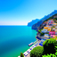
Start 1
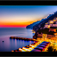
Start 3
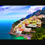
Start 5
Start 7
Start 10
Start 20
1.8 Visual Anagrams
Visual Anagrams are optical illusions where an image looks like one thing upright, but something completely different when rotated 180 degrees.
To achieve this, I modified the denoising loop to optimize for two prompts simultaneously:
- Estimate noise $\epsilon_1$ for Prompt 1 on the normal image.
- Flip the image upside down.
- Estimate noise $\epsilon_2$ for Prompt 2 on the flipped image.
- Flip $\epsilon_2$ back and average it with $\epsilon_1$.
import numpy as np
def make_flip_illusion(image, i_start, prompt_embeds_1, prompt_embeds_2, uncond_prompt_embeds, timesteps, scale=7, display=True):
with torch.no_grad():
for i in range(i_start, len(timesteps) - 1):
t = timesteps[i]
prev_t = timesteps[i+1]
alpha_cumprod = alphas_cumprod[t]
alpha_cumprod_prev = alphas_cumprod[prev_t]
alpha = alpha_cumprod / alpha_cumprod_prev
beta = 1 - alpha
t_tensor = torch.tensor(t, device="cuda")
cond_out_1 = stage_1.unet(
image.half().cuda(),
t_tensor,
encoder_hidden_states=prompt_embeds_1.half().cuda(),
return_dict=False
)[0]
# Unconditional Noise
uncond_out_1 = stage_1.unet(
image.half().cuda(),
t_tensor,
encoder_hidden_states=uncond_prompt_embeds.half().cuda(),
return_dict=False
)[0]
noise_cond_1, pred_var = torch.split(cond_out_1, image.shape[1], dim=1)
noise_uncond_1, _ = torch.split(uncond_out_1, image.shape[1], dim=1)
eps1 = noise_uncond_1 + scale * (noise_cond_1 - noise_uncond_1)
flipped_image = torch.flip(image, dims=[2])
cond_out_2 = stage_1.unet(
flipped_image.half().cuda(),
t_tensor,
encoder_hidden_states=prompt_embeds_2.half().cuda(),
return_dict=False
)[0]
uncond_out_2 = stage_1.unet(
flipped_image.half().cuda(),
t_tensor,
encoder_hidden_states=uncond_prompt_embeds.half().cuda(),
return_dict=False
)[0]
noise_cond_2, _ = torch.split(cond_out_2, image.shape[1], dim=1)
noise_uncond_2, _ = torch.split(uncond_out_2, image.shape[1], dim=1)
eps2_flipped = noise_uncond_2 + scale * (noise_cond_2 - noise_uncond_2)
eps2 = torch.flip(eps2_flipped, dims=[2])
eps_final = 0.5 * (eps1 + eps2)
x0 = (image - torch.sqrt(1 - alpha_cumprod) * eps_final) / torch.sqrt(alpha_cumprod)
pred_prev_image = (torch.sqrt(alpha_cumprod_prev) * beta / (1 - alpha_cumprod) * x0) + \
(torch.sqrt(alpha) * (1 - alpha_cumprod_prev) / (1 - alpha_cumprod) * image)
image = add_variance(pred_var, t, pred_prev_image)
return image.cpu().float().detach().numpy()
Below are three examples of such illusions.
1. "An Oil Painting of an Old Man" <-> "People around a Campfire"
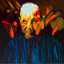
Upright: An Old Man
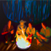
Flipped 180°: People around a Campfire
2. "A Rocket Ship" <-> "A Pencil"
Upright: A Rocket Ship
Flipped 180°: A Pencil
3. "Amalfi Coast" <-> "Snowy Mountain Village"
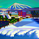
Upright: Amalfi Coast
Flipped 180°: Snowy Mountain Village
1.9 Hybrid Images (Factorized Diffusion)
Hybrid Images combine the low-frequency components of one image with the high-frequency components of another.
When viewed from afar (or squinting), you see the low-frequency structure. When viewed up close, you see the high-frequency details.
I implemented this using Factorized Diffusion. We generate noise estimates for two different prompts, then decompose them into frequency bands: $$ \epsilon = \underbrace{\mathcal{G}_{\sigma}(\epsilon_1)}_{\text{Low Freq}} + \underbrace{(\epsilon_2 - \mathcal{G}_{\sigma}(\epsilon_2))}_{\text{High Freq}} $$ where $\mathcal{G}_{\sigma}$ is a Gaussian blur operation.
I implemented this using Factorized Diffusion. We generate noise estimates for two different prompts, then decompose them into frequency bands: $$ \epsilon = \underbrace{\mathcal{G}_{\sigma}(\epsilon_1)}_{\text{Low Freq}} + \underbrace{(\epsilon_2 - \mathcal{G}_{\sigma}(\epsilon_2))}_{\text{High Freq}} $$ where $\mathcal{G}_{\sigma}$ is a Gaussian blur operation.
def make_hybrids(image, i_start, prompt_embeds_1, prompt_embeds_2, uncond_prompt_embeds, timesteps, scale=7, display=True):
with torch.no_grad():
for i in range(i_start, len(timesteps) - 1):
t = timesteps[i]
prev_t = timesteps[i+1]
alpha_cumprod = alphas_cumprod[t]
alpha_cumprod_prev = alphas_cumprod[prev_t]
alpha = alpha_cumprod / alpha_cumprod_prev
beta = 1 - alpha
t_tensor = torch.tensor(t, device="cuda")
current_img = image.half().cuda()
cond1 = stage_1.unet(
current_img, t_tensor, encoder_hidden_states=prompt_embeds_1.half().cuda(), return_dict=False
)[0]
uncond1 = stage_1.unet(
current_img, t_tensor, encoder_hidden_states=uncond_prompt_embeds.half().cuda(), return_dict=False
)[0]
noise1, pred_var = torch.split(cond1, image.shape[1], dim=1)
noise1_uncond, _ = torch.split(uncond1, image.shape[1], dim=1)
eps1 = noise1_uncond + scale * (noise1 - noise1_uncond)
cond2 = stage_1.unet(
current_img, t_tensor, encoder_hidden_states=prompt_embeds_2.half().cuda(), return_dict=False
)[0]
uncond2 = stage_1.unet(
current_img, t_tensor, encoder_hidden_states=uncond_prompt_embeds.half().cuda(), return_dict=False
)[0]
noise2, _ = torch.split(cond2, image.shape[1], dim=1)
noise2_uncond, _ = torch.split(uncond2, image.shape[1], dim=1)
eps2 = noise2_uncond + scale * (noise2 - noise2_uncond)
eps_low = TF.gaussian_blur(eps1, kernel_size=33, sigma=2)
eps_high = eps2 - TF.gaussian_blur(eps2, kernel_size=33, sigma=2)
eps = eps_low + eps_high
x0 = (image - torch.sqrt(1 - alpha_cumprod) * eps) / torch.sqrt(alpha_cumprod)
pred_prev_image = (torch.sqrt(alpha_cumprod_prev) * beta / (1 - alpha_cumprod) * x0) + \
(torch.sqrt(alpha) * (1 - alpha_cumprod_prev) / (1 - alpha_cumprod) * image)
image = add_variance(pred_var, t, pred_prev_image)
return image.cpu().float().detach().numpy()
Below are three examples. The "Pixelated" view simulates seeing the image from a distance (low pass), revealing the hidden shape.
1. "A Lithograph of a Mushroom" (Low) + "A Nuclear Explosion" (High)
Hybrid Image
(Up Close: Explosion)
(Up Close: Explosion)
Blurred View
(Reveals Mushroom Shape)
(Reveals Mushroom Shape)
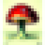
Pixelated View
(Distance Simulation)
(Distance Simulation)
2. "A Photo of a Hamburger" (Low) + "A Close up of a Toad" (High)
Hybrid Image
(Up Close: Toad Skin)
(Up Close: Toad Skin)
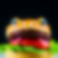
Blurred View
(Reveals Burger Shape)
(Reveals Burger Shape)
Pixelated View
(Distance Simulation)
(Distance Simulation)
3. "A Lithograph of a Skull" (Low) + "A Lithograph of Waterfalls" (High)
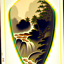
Hybrid Image
(Up Close: Waterfall lines)
(Up Close: Waterfall lines)
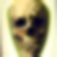
Blurred View
(Reveals Skull)
(Reveals Skull)
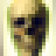
Pixelated View
(Distance Simulation)
(Distance Simulation)
Key Takeaways: Neural Radiance Fields (Part 2)
- Coordinate-Based Representation scales to 3D: The core concept from Part 1—mapping coordinates to values—extends naturally to 3D. Instead of $(u,v) \to \text{RGB}$, NeRF maps $(\mathbf{x}, \mathbf{d}) \to (\mathbf{c}, \sigma)$. The image isn't stored as pixels but emerges from integrating this continuous field along rays.
- Positional Encoding is Non-Negotiable: Without high-frequency positional encoding ($L=10$), the network fails to capture fine details like the thin Lego technic parts or sharp shadows. It effectively acts as a low-pass filter, producing only blurry blobs.
- Geometry through Consistency: The model never receives explicit 3D geometry (like a mesh or depth map) as input. Yet, by forcing the network to be consistent across many different views, a coherent 3D geometry emerges implicitly. The smooth orbit videos prove the model has learned the underlying structure, not just memorized 2D patches.
- Importance of Sampling Strategy: The choice of `near` and `far` bounds and the number of samples per ray is critical.
- For the Lego dataset, generic bounds (2.0 to 6.0) worked because the scene is normalized.
- For real-world data, I had to tune these bounds tightly (e.g., 0.02 to 0.5) to focus the limited sampling budget on the actual object, otherwise the model wasted capacity on empty space and failed to converge.
- Data Quality Matters: The robust results on the synthetic Lego dataset compared to the more fragile results on my custom hand-captured object highlight that accurate camera poses (COLMAP/ArUco) and consistent lighting are just as important as the model architecture itself.